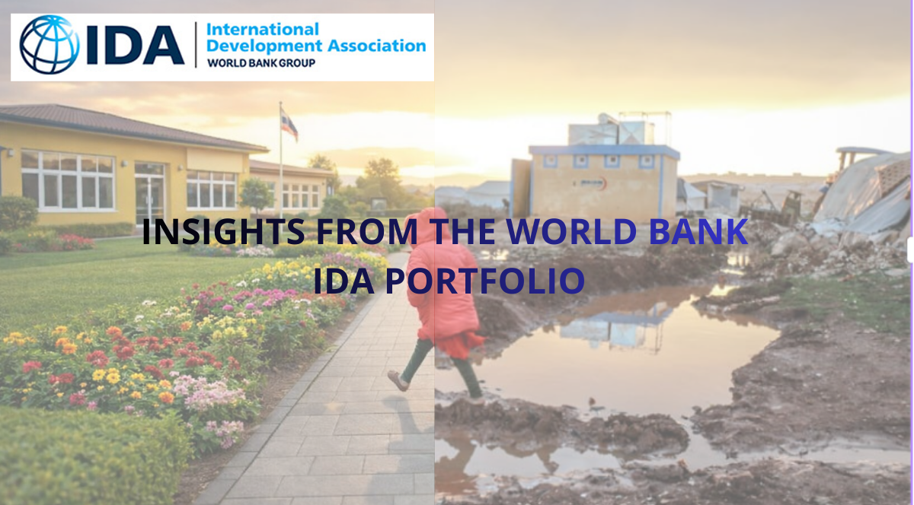
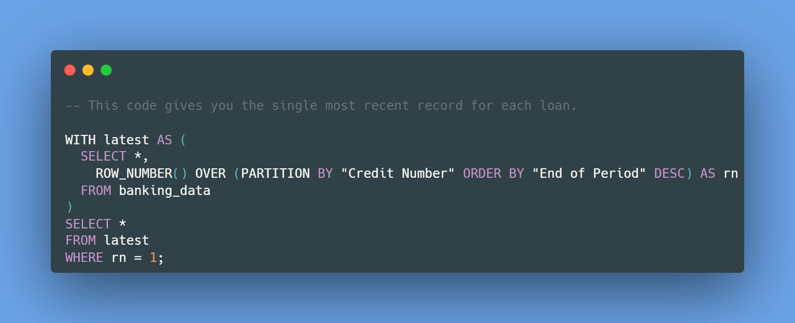
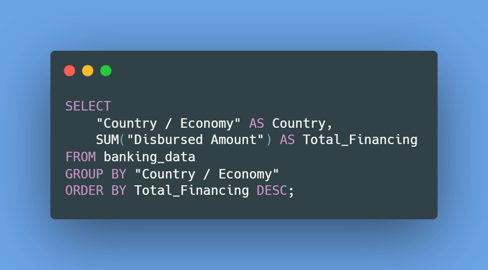
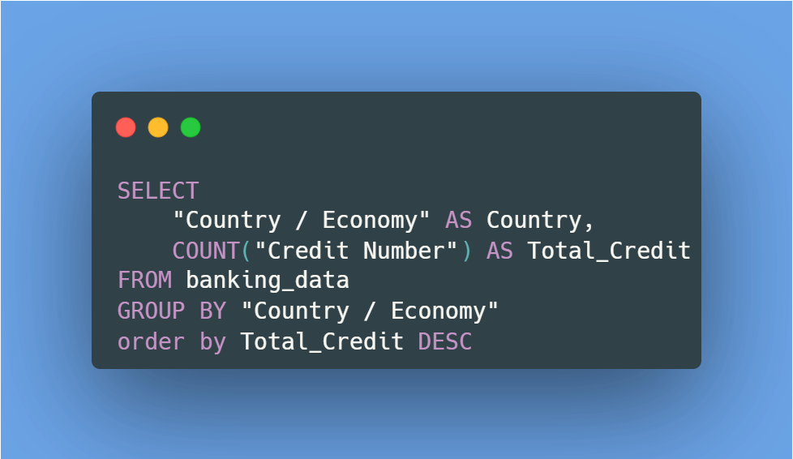
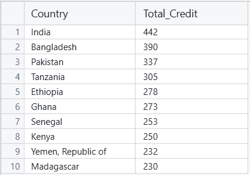
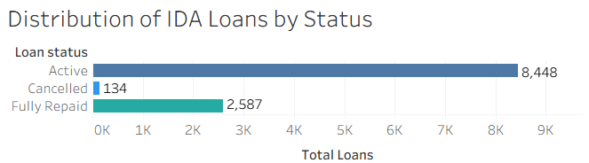
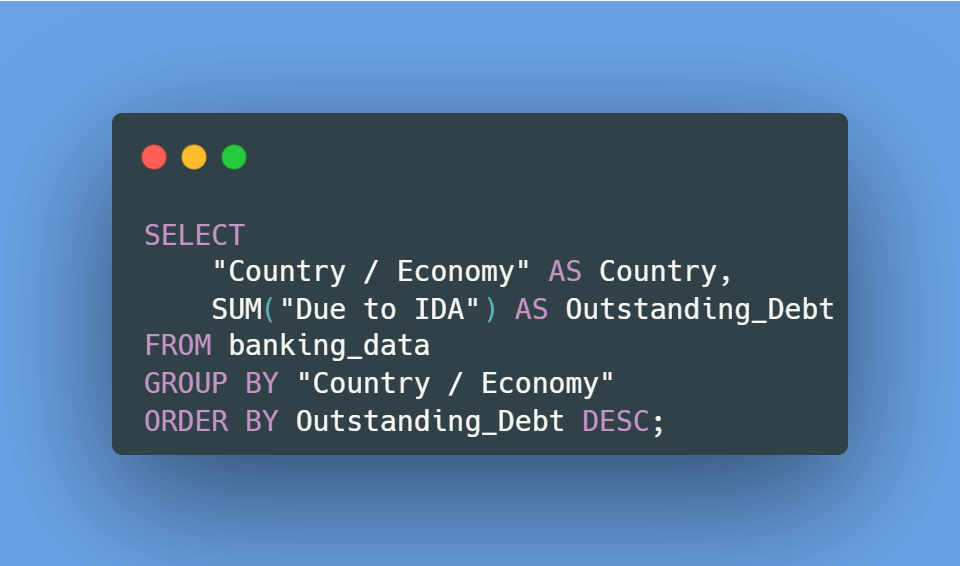
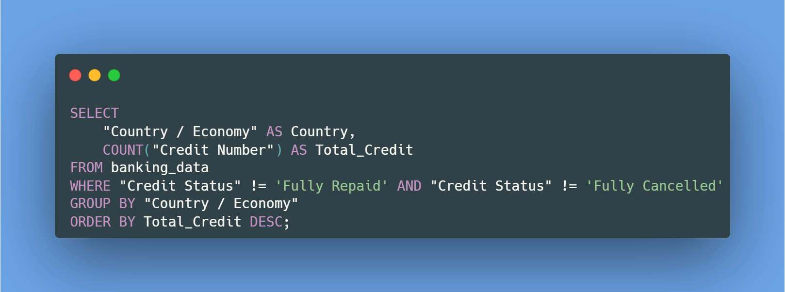

Global Development Credit Risk Dashboard
Understanding Where World Bank Development Financing Is Concentrated

1. Why This Project?
The World Bank plays a central role in supporting economic development across the world. One of its key objectives is to reduce extreme poverty while promoting long-term economic growth in developing countries.
Within the World Bank Group, two major institutions are responsible for providing financial support to governments:
- International Bank for Reconstruction and Development (IBRD)
- International Development Association (IDA)
While the IBRD mainly lends to middle-income countries, the International Development Association (IDA) focuses on the world’s poorest economies by providing concessional financing through loans, grants, and guarantees.
These financial resources support critical development initiatives such as:
- Education systems
- Infrastructure projects
- Public health programs
- Disaster recovery efforts
- Economic development initiatives
Because these investments often span several decades, understanding where the financing is allocated and which countries depend the most on it is essential.
This project analyzes the IDA credit portfolio to answer two key questions:
- Where is IDA financial exposure concentrated?
- Which countries depend the most on IDA financing?
2. Why This Analysis Matters
International development financing involves billions of dollars and long-term commitments between institutions and governments.
Understanding how financing is distributed helps answer important policy and financial questions:
- Which countries receive the largest share of development financing?
- Which countries rely most heavily on IDA programs?
- Where is the World Bank currently exposed to the highest financial risk?
By analyzing these patterns, we can better understand how global development resources are allocated and how financial exposure is distributed across countries.
3. Dataset Overview
The dataset used in this analysis was obtained from the World Bank's official database and contains historical records of loans issued through the International Development Association.
One important characteristic of this dataset is that it is structured as a monthly snapshot.
This means that each row represents the status of a loan at a specific moment in time.
As a result:
- The same loan can appear multiple times
- Historical loans may still appear in past snapshots
- Without proper data preparation, analyses could double count loans
The dataset used in this project was downloaded in March 2026, meaning that future snapshots may slightly change the results.
4. Financing Instruments Included
The dataset includes three types of IDA financing instruments:
- Credits (concessional loans)
- Grants (non-repayable funding)
- Guarantees (risk-reduction mechanisms)
These financing types can be identified through prefixes in the Credit Number field.
Because each instrument serves a different purpose, they were treated differently depending on the analysis performed.
5. Data Cleaning and Preparation
Due to the snapshot structure of the dataset, data preparation was required before performing the analysis.
Since each loan may appear multiple times across reporting periods, the dataset had to be cleaned in order to keep only the most recent record for each credit.
This was done using a SQL window function with ROW_NUMBER().

The query assigns a row number to each record within the same credit based on the snapshot date.
The most recent record receives row number 1, allowing the dataset to be filtered to retain only the latest snapshot of each loan.
This approach ensured that:
- each loan appears only once
- uplicate historical records are removed
- the dataset reflects the current state of the credit portfolio
After cleaning the data in SQL, the final dataset was exported and used for visualization in Tableau.
SQL was used for data preparation and aggregation, while Tableau was used to explore patterns and present the results visually.
6. Global Credit Portfolio Overview
Key Question: Where is IDA financial exposure concentrated?
To answer this question, several key portfolio metrics were analyzed.
Total Financing by Country
To measure how much financial support each country received, the analysis focused on the Disbursed Amount variable.
This variable represents the actual funds transferred to countries, rather than the total amount originally approved.
Although the dataset includes committed loan amounts, not all approved funds are necessarily disbursed.
Therefore, using the disbursed amount provides a more accurate representation of the real financial support delivered by IDA.

The results were visualized using Tableau.

The results show that the top 10 countries account for 51.53% of total IDA financing across the 133 countries included in the dataset.
India ranks as the largest recipient, receiving more than 46 billion USD in development financing.
A large proportion of the top recipients are located in Sub-Saharan Africa and South Asia, regions where development financing plays a critical role in supporting infrastructure, poverty reduction, and economic growth.
Number of Credits by Country
To complement the financing analysis, the number of credits issued to each country was also examined.
This analysis helps determine whether countries receiving the highest funding also participate in the largest number of development projects.


The results reveal that India received the highest number of credits (442), followed by Bangladesh and Pakistan.
This confirms the findings from the previous analysis, where India also appeared as the largest recipient of total financing.
These results suggest that certain countries maintain long-term development partnerships with the World Bank, participating in numerous development initiatives over time.
Active vs Fully Repaid Loans
To better understand the current structure of the IDA credit portfolio, loans were categorized into three groups:
- Active
- Fully Repaid
- Cancelled
The Active category includes loans with the following statuses:
- Approved
- Effective
- Disbursing
- Fully Disbursed
- Repaying
- Disbursing & Repaying
Although these statuses represent different stages of the loan lifecycle, they all indicate that the credit remains active within the portfolio.

The results show:
- 75.64% Active Loans
- 23.16% Fully Repaid
- 1.2% Cancelled
This indicates that the majority of IDA loans are still part of ongoing development financing programs.
The very small percentage of cancelled loans also suggests that most approved projects successfully progress through the full financing cycle.
Total Outstanding Debt
To measure the current financial exposure of the IDA portfolio, the analysis focused on the total outstanding debt.
Outstanding debt represents the portion of loans that has already been disbursed but has not yet been repaid by the borrowing country.
The variable used for this analysis was "Due to IDA", which reflects the remaining balance owed to the International Development Association.


The analysis shows that the countries with the highest outstanding balances are:
- Bangladesh
- Pakistan
- Nigeria
each with more than 18 billion USD in outstanding obligations.
This indicates that the majority of IDA loans are still part of ongoing development financing programs.
The very small percentage of cancelled loans also suggests that most approved projects successfully progress through the full financing cycle.
7. Country Dependency Analysis
Key Question: Which countries depend the most on IDA financing?
To answer this question, the number of active credits per country was analyzed.
Active credits represent development projects that are still ongoing and have not yet been fully repaid or cancelled.


The results show that Bangladesh, India, and Pakistan currently have the highest number of active credits.
Countries such as Kenya, Ethiopia, and Tanzania also appear among the top recipients, indicating a strong reliance on IDA-supported development programs.
Interestingly, while India historically received the highest financing and the largest number of credits, the outstanding debt analysis revealed that Bangladesh and Pakistan currently hold higher remaining balances.
This suggests that many of India's earlier loans have already progressed further into the repayment cycle.
8. Impact of COVID-19 on Development Financing
The COVID-19 pandemic created an unprecedented global economic shock, particularly affecting low-income countries with limited fiscal capacity.
In response, the International Development Association (IDA) significantly expanded financial support to help countries strengthen healthcare systems, stabilize economies, and maintain essential public services.
To better understand how development financing evolved during this period, the analysis compares three timeframes:
- Pre-COVID period (before 2020)
- COVID period (2020–2021)
- Post-COVID period (after 2021)

The results show a significant increase in financing during the COVID period.
Average annual financing rose substantially compared to the pre-COVID years, reflecting the World Bank's effort to support vulnerable economies during the crisis.
Both credits and grants increased, although grants became particularly important as many low-income countries faced severe fiscal constraints.
The geographic distribution of financing during COVID also shows strong concentration in Sub-Saharan Africa and South Asia, regions particularly vulnerable to the economic and public health impacts of the pandemic.
Following the crisis, financing levels declined but remained above pre-COVID levels, suggesting that development financing continues to play an important role in economic recovery.
9. Key Insights
Several important insights emerge from this analysis:
- IDA financing is highly concentrated, with the top 10 countries receiving more than 51% of total funding.
- Countries such as India, Bangladesh, and Pakistan consistently appear among the largest recipients of development financing.
- More than 75% of the loan portfolio remains active, highlighting the long-term nature of development financing programs.
- Although India historically received the highest amount of funding, Bangladesh and Pakistan currently represent higher outstanding financial exposure.
- Development financing increased significantly during the COVID-19 crisis, demonstrating the role of international institutions in stabilizing vulnerable economies.
10. Conclusion
IDA financing plays a crucial role in supporting long-term development initiatives in low-income countries.
This analysis shows that development financing is concentrated among a relatively small group of countries that maintain long-standing partnerships with the World Bank.
By examining financing distribution, outstanding debt, and the number of active projects, it becomes possible to understand where the current financial exposure of the IDA portfolio is concentrated.
The analysis also demonstrates how development financing mechanisms can rapidly scale during global crises, helping countries maintain essential services and support economic recovery.
Understanding these patterns helps illustrate how international development financing contributes to infrastructure development, economic growth, and poverty reduction across the world.